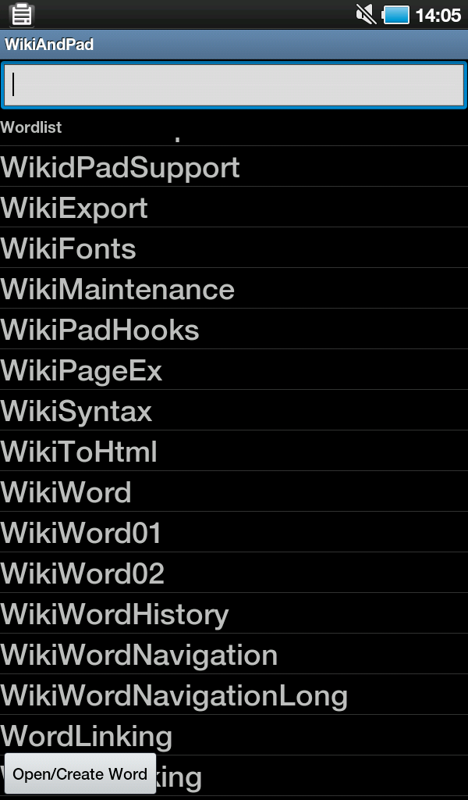
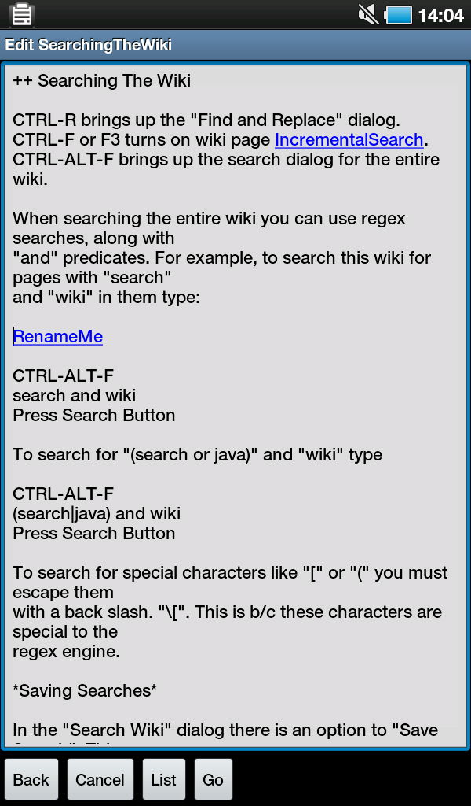

WikiAndPad is (planned to become) WikidPad's little brother for Android.
WikidPad is a Wiki-like notebook for
storing your thoughts, ideas,
todo lists, contacts, or anything else you can think of to write
down.
It is Open Source and available for Windows (binary installer) and
Linux and Mac OS (as Python source).
WikiAndPad will allow to create, read and edit binary compatible wikis on
the Android platform.
This is an alpha version, be very careful and make backups!
At the moment it can only:
open existing wikis on sd-card (can't create new ones)
list all wiki words, choose one to open, delete or rename it (similar to
"Open Wiki Word" dialog in WikidPad)
edit contents of a wiki page
syntax highlight wiki words in the editor and allow to jump to
other pages (double-tap to jump or place cursor in wiki word and tap "Go")
Download
You can download APK-files from here if you can't or don't want to use
the Google Play.
 
Trademarks and registered trademarks (even if not marked as such) are
property of their respective owners.
|
|
| Donations... |
|
WikidPad was invented by Jason Horman who made it
open source in June 2005.
WikiAndPad was created October 2011 by
Michael Butscher.
If you want to donate to Michael Butscher for his work and
you have a Paypal account use the following link to donate via
Sourceforge:
Donate
|
| News... |
Jan 31, 2013
WikiAndPad 0.2alpha03 is now available. Open recent wikis,
better navigation through large pages.
Download
Android APK.
|
May 25, 2012
WikiAndPad 0.2alpha02 is now available. Some cleaning.
Download
Android APK.
|
Jan 27, 2012
WikiAndPad 0.2alpha01_02 is now available. Option to set root
directory for folder picker.
Download
Android APK.
|
Jan 13, 2012
WikiAndPad 0.2alpha01 is now available. Read/edit "Compact Sqlite"
databases.
Download
Android APK.
|
Dec 16, 2011
WikiAndPad 0.1alpha03 is now available. Basic search capabilities.
Download
Android APK.
|
Nov 10, 2011
WikiAndPad 0.1alpha02 is now available.
Download
Android APK.
|
Oct 11, 2011
WikiAndPad 0.1alpha01_02 is now available. It is the first version,
so be careful and don't expect too much.
Download
Android APK.
|

|